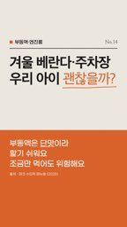

14번 영상
겨울 베란다 · 주차장 우리 아이 괜찮을까?
쿠팡 링크는 아직 준비 중이에요. 아래 비교는 지금 바로 읽을 수 있어요.
개·고양이 키우는 우리 집
부동액은 단맛이라 핥기 쉬워요 조금만 먹어도 위험해요 (머크 수의학 매뉴얼 (2025))
집 밖 위험 체크
먹은 것 같으면 바로 병원
- 잠기는 보관함 (높은 선반도 OK)
- ✔ 부동액·제설제 손 안 닿게
- ⚠ 바닥에 흘린 자국 없나?
- 보닛 똑똑 (물건 말고 습관)
- ✔ 시동 전에 두드려요
- ⚠ 길냥이가 엔진룸에 들어가요
- 띄운 방석 (온풍기에서 멀리)
- ✔ 바닥에서 띄워요
- ⚠ 난방기 바로 옆은 위험해요
출처 · 머크 2024·2025 · 퍼듀 2017 · 농식품부 2025 · 콜로라도주립대 2021